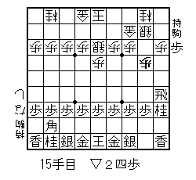
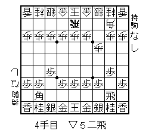
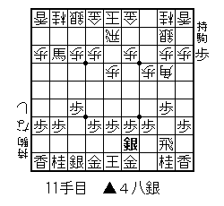

この物語の主人公は、辰吉君といいます。
何回かにわたって、フィクションの小説、仕上げます。
フィクションだけど、まったくの、でたらめではないので
そうなのかって思って、楽しんでくださいね。
辰吉君は新卒で、ある会社に入りました。
そこでは、将棋が流行っていて、お昼休みになると、
みんなで、将棋を楽しんでいたのです。
辰吉君は、小学生のときに、将棋を覚えたのですが
それ以来、ずう〜っと指してなかったので、へたっぴに
なっていました・・・・・ (*^-^*)ニコ
でも、誘われて指してるうちに、将棋を指すことが
楽しくなって、大好きになっていきました。
その会社には、将棋部というのが、あって
毎週土曜日には、みんなで集まって・・・・
お互いに昇級をかけて、将棋を指すんです。
一番強い人は、なんと、関東学生チャンピオンに
なったことのあるほどの人だったので、
その人の提案で、みんなの級を決めました。
その方は４段（勝ち負けしても段はかわらない）
先手・・・・・・１級差
香車落ち・・・・２級差
角落ち・・・・・３級差
飛車落ち・・・・４級差
２枚落ち・・・・５級差
４枚落ち・・・・７級差
６枚落ち・・・１０級差
みたいに決めて・・・
辰吉君は、最初６級から頑張ることになりました。
とまあ、ここまで書くと立派な将棋部に見えますが
実際は、部員は、６人だけ・・・
毎週きちんと集まるのは、３人だけだったので
将棋部というには、ほんとは、ちょっとだけ
おおげさだったかもです〜 （*^-^*）ノ
でも、３人は、将棋が、大好きだったので
毎週、一生懸命、さしていました。
今日は、ここまで・・・続きは、また、あしたね〜〜
（〃⌒―⌒〃）ゝ
そんなある日のことでした・・・
部長の竹本さん（４段）が、職団戦の話を
みんなに、持ちかけたんです。
正式には、職業団体戦といって・・・
毎年、秋に、武道館とかで行われるんだそうです。
Ａ級からＦ級まで、分かれていて
初めて参加する場合、普通はＦ級から始めるそうです。
それで、もしもいい成績が、とれれば、次からは
Ｅ級にあがれて、そこで、また、他の会社の人たちと
戦うことになるんですって！
５人対５人で戦って、３勝以上した方が２回戦に進めます。
それぞれの階級で優勝が決まるのですが、
優勝するまでには、最低でも、６回戦くらい勝たないと
だめなんだそうです・・・・。
その話をきいて、辰吉君は思いました・・・・・
「せっかく将棋始めたんだから、そういう大会があるんだったら
ぜひとも出て見たいなあ〜〜〜〜 (*^-^*)ニコ」
いつもの３人・・・
竹本さん（４段）水谷さん（初段）辰吉君（６級）は、
なんだか、わくわくしてきました。
それからの土曜日の例会は、いつも以上に、この２人は、
頑張るようになりました。
竹本さんは、２面指しで、駒落ちをしてくれるので
二人は、上手の手筋をどんどん、吸収していけたのです。
今日は、ここまでだよん・・・また、あしたね〜
（〃⌒―⌒〃）ゝ
だんだん、職団戦の日が近づいてきました・・・
しかし〜〜〜〜〜 ここで、大きな問題に、ぶち当たってしまったのです。
その大きな問題とは・・・ (*^-^*)ニコ
お察しのとおり、人数のことなんです。
部員は６人といっても、３人は幽霊部員・・・
まったく将棋やりません〜〜あうう・・・
よって参加できるのは、３人しかいないんです。
３人は、一生懸命残りの部員を説得しましたが、
「いやだよん〜」
「だめだよん〜」
「めんどうだも〜ん」
の、返事に、一気に玉砕するしか、ありませんでした。
どうなる職団戦・・・
この３人は、どうなる・・・
今までの苦労は、どうなる〜〜〜〜
と、困ったところで、今日は、おしまい〜
続きは、明日だから、また、読んでね〜〜
（〃⌒―⌒〃）ゝ
大会前日になりました・・・
竹本さんが、辰吉君と水谷さんにいいました。
明日は、大丈夫だから、ちゃんと会場にきてくれ〜
メンバーは助っ人を２人頼んだから、心配ない。
ここまで、みんなで頑張ったんだから、参加しなくちゃな！
こう言ってくれたんです。
半分、あきらめかけていた辰吉君と水谷さんは
めちゃ、嬉しくなりました。
明日の戦法は、こうしよう、ああしようとかいって
その日は、遅くまで、３人で将棋、頑張りました・・・
〜〜ついに大会当日〜〜
わくわくの辰吉君・・・開始時刻は９時なのに・・
１時間近くもはやく、会場についてしまいました。
愛読書の詰め将棋の本を、ながめては・・・
うんうん、５手詰め、だいぶ、解けるようになったぞ！
これは、ちょっとは、いけるかも〜〜〜〜
いやいや・・・絶対いける〜〜〜〜とかいって
待ち合わせの場所で待っていました。
８時半ごろになって、水谷さんが、到着しました。
水谷さんは、必勝４間飛車という本を、もってます。
辰吉君は、ちなみに必勝４間対策というのを持ってましたが
ふたりで、やると、ほとんど、水谷さんが、勝つんです。
どこが、必勝じゃ〜〜〜 （〃⌒―⌒〃）ゝ
９時が近づきました。
竹本さん、まだ来ません・・・
「おいおい〜」
「まさか、竹本さん、寝てるのでは・・・・」
「う〜〜〜〜ん」
９時になってしまいました・・・
でも、竹本さん、まだ、来ません・・・
一難去ってまた一難・・・ううう
二人は、泣きそうになってしまいました・・・
きょうは、ここまでね〜
この続き、いったい、どうなるんでしょう
・・・・ (*^-^*)ニコ
二人は心配で、九段下の駅のほうを、見たり
会場の入り口のほうを、何度もきょろきょろ、見渡します。
このまま、参加できないまま、初めての職団戦が、
終わってしまうなんて、あまりも悲しいですよね！
と・・・９時１０分すぎたころ・・・
「やあ、待たせたかなあ〜わっはっは」
といって、竹本さんが、２人の助っ人を引き連れて
二人の前に、姿を見せました。
「うううううう・・・」
なんてやつなんでしょう〜 えぐっえぐっ（＞＜）
助っ人さんの名前ですけど・・
一人は、神谷さんといって、
竹本さんの大学時代の将棋部の副将だったそうです。
この方もめちゃ強いそうです・・・頼もしい〜 （*^-^*）
もう一人は、不利さんという方で、
なんと竹本さんの住んでる下宿の大家さんの息子さん！
将棋は、覚えたてで・・どうにか、メンバー合わせのために
無理いって来てもらったそうです・・あうん〜
でも、なんといっても５人目の大事な、おかたです〜
「来てもらえて、すごく嬉しいですう〜」
「きょうは、楽しくがんばりましょうね〜〜〜」
「不利さんとおっしゃるくらいだから、
得意戦法は、振り飛車なのでは、ありませんか？」
「がははっ！・・実は、まだ、金と銀との動きの区別が・・・」
「ひょえ〜〜〜」
などと、談笑しながら、５人は、武道館に入りました。
開会式が始まっていて・・・
前年度の成績優秀者の方が、免状の授与とかを、受けられていて
そのあとで、ルールの説明とかが、ありました。
そして〜〜〜
ついに、第一回戦が、はじまったのです。
最初の相手は、岡部鉄材（株）さんというところでした。
対局時計が、全部のところに、用意してあって
持ち時間は、３０分（？）
それが、切れると、一手３０秒です。
秒読みの場合は、先に対戦の終わった人が、読み上げるみたいです。
辰吉君のどきどきは、もう最高潮です・・・ (*^-^*)
初手、７６歩〜〜〜〜〜
こうして、この５人の職団戦が、スタートしました。
続きは、またあしたね〜 （〃⌒―⌒〃）ゝ
大将は、竹本さん
副将は、神谷さん
三将は、水谷さん
そして、四将は、なんと辰吉君
当然のことながら、しんがりは、不利さんです (*^-^*)ニコ
一回戦
「岡部鉄材さんは、何回くらい出場されてるんですか？」
「う〜む・・・もう、今回で、５回目ですね〜」
「ほえ〜〜〜」
戦う前から、辰吉君、相手に、頭、さげてま〜す。
その、辰吉君に、竹本さんが、耳打ちしました。
「相手は、５回も出てて、いまだに、Ｆ級〜〜
ということは、弱いに決まっとるじゃろうが〜〜」
「なるほど〜〜〜〜〜〜 (*^-^*)ニコ」
もしかしたら、いけるかも・・・
目標は、とりあえず一回戦突破・・・・
辰吉が、やらなくて、だれがやる〜〜〜
気合の入った辰吉君で、ありました〜〜〜〜 （〃⌒―⌒〃）ゝ
「それでは、初めてください。」
振りゴマで大将が、先手になりました・・・
自動的に、三将と、しんがりの人が、先手になります。
そして、初めての職団戦が、はじまったのです。
開始して、３０分足らずで、なんと〜〜〜〜〜
竹本さんと神谷さんは、勝ちを収めました。
残るは、１勝でいいんですよね (*^-^*)ニコ
辰吉君、水谷さん、不利さん、だれが勝ってもよくなりました。
難しい局面で、考えている辰吉君の耳に・・・
「あのう・・・金って、ななめうしろに、下がれましたっけ？」
信じられないことを、相手に聞いている不利さん・・・
そして・・・
「横と真後ろには、さがれますよ〜」
と、親切に答える相手のかた （〃⌒―⌒〃）ゝ
さっきの考え・・・パス〜〜〜〜〜〜
残りの３人では、なくて、
「僕か、水谷さんのどちらかが、勝たないと、だめなんだ！」
急に、プレッシャーを、感じ始めた辰吉君なので、ありました。
さあ、どうなる一回戦・・・わくわくの展開のまま
明日に続きま〜す・・・・ o(*⌒O⌒)ｂふぁいとっ!!
辰吉君は、ちょうど勝負どころに、さしかかっていました。
守るのか、攻めるのかで、なやんでいました。
横を、見ると、不利さんが・・・・
「いやあ、そちら、お強いですね〜〜〜」
と、
頭を、かいています・・・なんなんだ〜〜〜 （〃⌒―⌒〃）ゝ
局面は、みればみるほど、わからなくなってきます。
と・・・そのとき、水谷さんの勝負が、つきました。
なんと、負けてしまったのです・・・ううううううう
残るは、辰吉君と不利さんのふたりだけ・・・・
「ええ〜い！」
「いってしまえ〜〜〜〜〜」
「おれは、ノーガード戦法なんだ〜〜〜〜〜」
そう、思うことにして、ついに、たっちゃんは、仕掛けました。
しかし、相手は、思ったより、強いんです。
しっかり、受けられて、たっちゃんのせめが、切れそうになりました。
もうだめだ・・・と、半分、たっちゃんが、あきらめたとき・・・
「どうもでした・・・負けました。」
と、不利さんが、負けを宣言しました。
やばい、やばすぎる〜
このまま、一回戦の露と消えてしまうのか・・・
初めての職団戦・・・
相手の人、全然まちがえそうに、ありません。
恐るべし、岡部鉄材さ〜ん ・・・えぐっえぐっ（＞＜）
あまりにやばい展開・・・・
初めての職団戦・・・連載１０回も、もたずして
このまま、おわってしまっていいのか〜〜〜〜
辰吉君・・・・ ＼(⌒0⌒*)ｂがんばっ♪
というところで、きょうは、おしまい〜 （〃⌒―⌒〃）ゝ
みなさんお待ちかねの職団戦その８で〜す。
前回は、一回戦２：２になってしまって、残るはたっちゃんひとり！
これで、負けると敗退という大ピンチでしたよね・・・
たっちゃんの局面は、もう、どうしようもないくらいピンチでした。
プロがかわっても、もう逆転できそうもないくらいだったんです。
「う〜〜ん」
えへへ・・・相手の人はもう勝ったという感じで
余裕をもってさえいます。
たっちゃんの顔は、もう真っ赤です。
どんどん、駒をとられます。
もうたっちゃんの駒台には、歩しかありません。
相手の王様は、金銀３枚で、手もついてません・・・
「うううううううう・・・・」
もうだめだ・・・みんなが、そう思いました。
でも、たっちゃんは、あきらめずに、一生懸命さしました。
短いけど、きょうは、ここまでね・・ (*^-^*)ニコ
たっちゃんは、最後までがんばりました。
でも・・・
でも・・・・・
でも・・・・・・ついに負けてしまったんです。
くやしくて、悲しくて、
ついつい涙を浮かべてしまった、たっちゃんでした。
そこに、竹本さんが、にこやかに、言いました。
「あはは、がんばったよなあ〜」
「がんばったけど・・・うううう」かえすたっちゃん！
「じつは、内緒にしておいたけど・・・」
「うん？」
「職団戦、これで、終わりじゃないんだ！」
「ええええ〜〜〜〜」
「ほんとは、敗者復活戦が、あるんだよ」
「な・・・なんと〜〜〜〜」
「よく、考えてみい〜」
「うん？」
「一回戦で優勝候補どうしが、ぶつかることもあるだろう？」
「たっ・・たしかに〜〜」
「それを、救うために、この職団戦は、毎年敗者復活戦がある」
「ほうほう」・・・不利さん、うれしそう〜 (*^-^*)ニコ
「そして、なんと、復活戦で、勝ち抜けば・・・」
「勝ち抜けば？？」うれしくなってきた、たっちゃん！
「３位とかじゃなくて、優勝もできるんだぞ〜」
「おおぉぉぉ ｗ(*・ｏ・*)ｗ」・・・不利さん
「ゆっ・・・ゆうしょう〜〜〜？？？！！！」・・たっちゃん！
「あはは、竹本も人が悪いなあ〜」・・・神谷さん。
「最初にいっといたら、気合が、はいらんじゃろうが〜」
「うううう・・・」・・・・たっちゃん
（〃⌒―⌒〃）ゝ
ということで、なんと、彼らは・・・
・・・２回戦にすすめることに、なったのです。
「ただし〜〜〜」と、念を押す竹本さん！
「ほえ？」・・・水谷さん
「こんどは、もう負けたらおしまいだからな〜〜〜」
「うううう・・・・」
それぞれの心の中・・・
竹本さん「まあ、おれと神谷はだいじょうぶだけど・・」
神谷さん「まあ、おれと竹本はだいじょうぶだけど・・・」
なんなんだ、このふたり〜〜 （〃⌒―⌒〃）ゝ
水谷さん「今度は、最初の投了だけは、やめよう・・・」
たっちゃん「こんどこそ・・ぜったい、かっちゃる〜〜」
不利さん「金は、横と後ろだけ・・・銀はどうたったっけ・・・」
こんな不利さんに、明日は、めぐってくるのだろうか！
次にすすめてよかったね・・・
というところで、きょうは、おしまいで〜す。
どうなる２回戦・・・こんどは、勝ちたいね・・・
みんな ＼(⌒0⌒*)ｂがんばっ♪
ついに、２回戦が、始まりました。
みんな真剣です。
今度の相手は、だあさん工作所（株）
主将は、だあのだあさんという、ふざけた名前の人でした。
「こんな相手に負けるはずがない〜〜」
かたく心にちかう５人でした・・・・。
そして、対局開始・・・
竹本さんは、い飛車の正統派です。
学生時代は、右４間の鬼って、いわれてたそうです。
でも、右４間って、いったいなあに〜〜
その竹本さん、相手の４間飛車に対して、いつもの右４間！
あれよあれよという間に、相手の角をもらっています。
それも・・・歩で・・・ (*^-^*)ニコ
そして、一番、始めに勝利を収めました。
だあのだあさんあえなく玉砕・・・
次に勝ったのは・・・・
やっぱり、神谷さんでした。
彼は、４間飛車の達人と、呼ばれてたそうです。
竹本さんと、やると、４：６くらいで、分が悪いそうですが
それでも、めちゃめちゃ、強いです。
美濃囲いの堅陣、まったく、くずされずに相手の王様を
つんでしまいました・・・・
竹本さんも神谷さんも、指してがはやいので
相手もそれにつられて、はやくなってしまいます。
それも、はやく勝負がつく、ひとつの要因みたい。
さあ・・・状況は、一回戦と同じになってきました。
残りの３人のうち、だれでもいいから、勝てばいいんです。
こんどは、勝てるといいですね・・・といいつつ
次回に、続きま〜す （〃⌒―⌒〃）ゝ
竹本さんと神谷さんが、はやくも勝ちを決めた２回戦でしたね。
だあさん工作所さんになんて、負けてなるものか〜・・・・
・・・だあさん、ごめんね〜 (*^-^*)ニコ・・・
相手は、一回戦で、負けたはずなんです・・・
ということは、絶対に強いはずがない・・・
そういうあんたたちもでしょうが〜
と、たっちゃんと水谷さんは、自信をもってさしました。
たっちゃんの得意戦法は、３間飛車〜
本石田に組めたときの強さは、はんぱじゃない〜
といいたいけど・・・なかなか、組めたことありません。
うるうるですよね （〃⌒―⌒〃）ゝ
それが、なんと相手が飛車先おそくついてくれたので
きれいに本石田組めたんです。
これは、いけるかも〜〜〜
たっちゃんはうれしくなりました。
王様もしっかり囲って、ついに攻め始めました。
水谷さんは横歩の将棋が、大好きです。
水谷さんの相手は、だあさん工作所の四将です。
そして、なんとこの将棋は、横歩になったんです。
相手の人は、横歩全然知らなくて
水谷さんの飛車は、角かえて同銀
そして、一気に金をとって竜になってしまいました。
（専門的でつまんない人は読み飛ばしてね〜）
そして、不利さんの状況は・・・
これは、また、次回ね〜 （〃⌒―⌒〃）ゝ
きょうは、不利さんの状況でしたよね〜
不利さんはしんがり・・相手の方も、もちろんしんがり〜
こちらは、ほんとのしんがり（一番弱いってことね＾＾；）
ところが〜〜〜
相手のしんがりは、なんと〜ほんとは一番強い人でした。
じつは、だあさん工作所は、毎年初戦敗退・・・
そして、敗者復活戦でも、いまだに、１勝もしたことが・・
そんな「だあさん工作所」の丸秘作戦・・・
それは、今年こそはの悲願の１勝だったのです。
よって、なんとしんがりが、実質の大将〜 （*^-^*）ノ
そんなこととは、つゆしらず、不利さんは燃えていました。
こんどこそ〜〜
せめて、一度は王手をするぞ〜〜
おいおい〜 （〃⌒―⌒〃）ゝ
不利さんの作戦今度は、王様をかためてから
一気にいく〜でした。
ところが、固めるまえに、せめられました。
相手の桂馬が、５７になってきたのです・・・
うううう・・・桂馬がなったときって・・・
動きがよくわかんない・・・（不利さん、あせあせ〜）
相手にきくと、なめられて
「こいつ、弱いやつだなあ」と、思われちゃうでしょう＾＾
よって、こっそり、となりのたっちゃんに聞きました。
「桂馬ってなると、どう動くんだっけ・・・」
「それ、僕も実は、自信ない・・・」
おいおいおい〜〜 （〃⌒―⌒〃）ゝ
「水谷さんに、きくから、待っててな〜」
「金と同じになるぞい」・・・あきれる水谷さん
「もとの動きはできないの？」・・・不安なたっちゃん
「できてたまるか〜〜」・・・ますますあきれる水谷さん
教えてもらった不利さんは、思いました。
そうだったのか・・・
これで、動きは完璧だ・・・
もう、負ける要素はない〜〜〜〜〜〜〜
がんばるぞ〜〜〜〜〜〜〜〜〜〜〜〜〜〜〜
こうやって不安いっぱいの職団戦は、次回へと・・・
（〃⌒―⌒〃）ゝ
不利さんが、桂馬の動きで、なやんでいたころ
ついに３勝目を、水谷さんが、あげました。
先に３勝してしまったので、この敗者復活戦は
もう、たっちゃんと不利さんが負けても
次にすすめるんです・・・
でも・・・
たっちゃんも不利さんも一生懸命将棋に没頭していました。
本石田に組めた、たっちゃん！
王様もしっかり美濃囲いに入っています。
いっけ〜７４歩だ〜
ついに、たっちゃん攻め始めました。
な・・・なんと・・・
日ごろ、竹本さんの重厚な将棋に
いつも、こてんぱんにされていた、たっちゃんでしたが
今回の相手は、なんだか弱いんです。
そんなこといったら、だめかな〜
たっちゃんが、強かったことにしときますね〜 (*^-^*)ニコ
気がつくと相手の駒、ほとんど取ってしまって
あいて、さしようがありません。
たっちゃんは、『よっしゃ〜、これから詰みにいくぞ』
と、思ったところで、相手の人、投了してしまいました。
うお〜〜っ！
や、やりました〜
ついに、ある会社・・・名前は・・・
メーテル株式会社にしとこっと〜
メーテル株式会社は、４勝もしてしまったのです。
これで、いいのだろうか〜
明日は雪だというこえも・・・
しかし〜〜〜
肝心の不利さんは、どうなってるんだろう・・
と、不利さんファンにはたまらない、ひっぱり (*^-^*)
次回に続きま〜す。
あしたも、続きみたい？
前回は、なんとメーテル株式会社が、
４勝してしまった〜というところまででしたね。
これで、不利さんまで勝てたら、なんと全勝〜〜
たっちゃんたちも、だあさん工作所のみんなも、
一生懸命ふたりの局面をみています。
だあさん工作所の人にとっては・・・
もしも、不利さんに勝つことができれば、
初の職団戦１勝になるのですから。
そして、局面はというと・・・
思いもよらず、不利さん、善戦していました。
いつもの、駒損めちゃめちゃ、はちゃめちゃ攻撃ではなく
損もなく、互角に中盤を戦っているのです。
もちろん、だあさんも（ほんとは大将 (*^-^*)ニコ）
負けているわけでは、ありません。
ほんとうに、まったく、互角なんです。
これは、いけるかも・・・
初の１勝できるかも・・・
だあさん工作所のみんなは、必死になって、
だあさんを、応援！
みんなの顔も紅潮しています。
あっ＼(◎ｏ◎）／！
不利さん、あそこに角をうてば、王手飛車だ〜〜
それは、だれにでも、わかる局面でした。
たっちゃんや水谷さんにも、わかりました・・・
でも、不利さんは、ウルトラ初心者なんです
気づけば勝てそうだけど・・・・ (*^-^*)ニコ
きょうは、ここまで〜 （〃⌒―⌒〃）ゝ
----王手飛車----
気づけば勝てそうっていうところでしたよね。
相手のだあさんも、さした瞬間気づきました。
やばい・・・王手飛車される・・・・
うううう・・・今年も１勝もできないで終わるのか・・・
だあさんも、覚悟を決めました・・・・
しかし〜
しかし〜〜〜
さすがは、ウルトラ初心者の不利さん
ぜんぜん、別の手さしてしまいました。
そして、それまでの善戦もむなしく
不利さん、どんどんピンチになっていくんです。
取れるはずだった飛車に成られてしまって
駒をぼろぼろ、取られていきます。
ううう、かわいそうな不利さん・・・
でも〜実力だからしょうがないかも〜（〃⌒―⌒〃）ゝ
そして・・・
ついに、不利さんの王様に王手がかかりました。
歩で、受けられるのに、金で受ける不利さん・・・
ぼろっと取られる、かわいそうな金！
もう、だあさん工作所のみんなは、わくわくです〜
これは、いける〜〜
きっと、かてる〜〜〜〜〜
ほんとかなあ〜
だあさんにも勝って欲しいし
不利さんにも勝たせたい〜
なやましいところで、続きはまたね！
（〃⌒―⌒〃）ゝ
そのあとも、不利さんねばってみましたが
ただ、ねばっただけ・・・
気がつくと不利さんの駒は、王様と歩だけに・・・
そして、ついに無念の投了となってしまいました。
だあさん工作所のみんなは、
まるで優勝したかのような喜びです。
だあさん「どうもありがとうございました〜」
不利さん「えぐっえぐっ（＞＜）」
不利さん、すごくくやしくなって・・・
こんどこそって、固く心に誓いました。
「絶対かつぞ〜〜〜」
うんうん、その気持ちが大切〜
なんとなくさすんじゃなくて
勝ちたいっていう気持ちが
自分を一生懸命考えさせてくれるんです。
敗者復活戦２回戦に向けて、
大事なこころがまえができた、不利さんでありました〜
あと・・・だあさん、おめでとう〜
だあさんたちは、初の１勝の喜びを胸にきざんで
来年もがんばって、１勝するぞ〜〜〜〜と
和気あいあいと、武道館をあとにしました。
だあさん、ほんとにほんとによかったね！
（〃⌒―⌒〃）ゝ
「岡部鉄材さん」に負けてしまったところで
終わるかと思えた職団戦だったはずなのに
なんと意外な展開！
そのあとの敗者復活戦で「だあさん工作所」さんに
勝ってしまいました・・・しかも４対１の大差で！
これが前回までのお話でしたね。
では、つづきで〜す。
職団戦はここで完全敗退チームが半分でるんです。
でも、よく頑張りましたよということで、２回戦終了後は
楽しいお食事会が始まります。
参加費２〜３０００円の大半は
このお食事代といってもいいくらいに
なかなかにおいしいお弁当がでるんですって！
この日はエビフライに、しいたけのバター焼き
お肉とたまねぎを焼肉のたれでいためたもの
おまけに大きな和風ハンバーグまでついてたそうです。
ごっくん・・・おなかすいちゃった〜（*^-^*）ノ
たっちゃん「あ、水谷さんのエビフライ大きい〜」
水谷さん「たっちゃんの方こそ、肉多すぎる〜」
不利さん「おおぉぉぉ ｗ(*・ｏ・*)ｗ」
神谷さん「ど・・ど・・どうした〜」
いったい何事が〜と気になるところで次回へ続くと！
（〃⌒―⌒〃）ゝ
不利さん「おおぉぉぉ ｗ(*・ｏ・*)ｗ」
神谷さん「ど・・ど・・どうした〜」
不利さん「しいたけがおいしすぎて〜〜
こういうのひさしぶりっす！」
あまりのおいしさに涙ぐむ不利さん
日ごろは何食べてんのよ〜〜
竹本さん「じゃあみんなそれで英気をつけて
午後は勝ちまくろうな！！」
みんな「まかせろ〜〜」
という具合に楽しいお食事会は過ぎていきました。
あとね
お食事会以外にも、お昼休みはイベント目白押しです。
プロのサイン会・駒落ち大局・ここでしか買えないお買い物！
竹本さん「せっかくだからサインもらってきたら？」
不利さん「プロの名前まったく知らないし〜」
神谷さん「あそこにいる人が今一番有名だぴょん」
不利さん「名前は？」
神谷さん「いけばわかりますぴょん」
不利さん「いっぱいならんでるけど〜〜」
神谷さん「それだけの価値はあるぴょん」
不利さん「それじゃ並んでくるね〜〜〜〜〜」
不利さんは飛び跳ねていきました。
ぴょんぴょん
なんなの・・この人たち・・・
そして待つこと３０分・・・
不利さんが手にした色紙・・・
書いてくれた人もすごいが内容がもっとすごい！
そこにはなんと・・・
またも気になるところでまたも次回ね！
(*^-^*)ニコ
そして待つこと３０分・・・
不利さんが手にした色紙には・・・なんと
「不利さんへ
桂馬なったら金と同じ
○○７冠」
と、あるではありませんか！！！！
Σ(ノ▼ο▼)ノ オォオォオオオ!!
なんというものすごい色紙でしょ〜
ありえない〜〜〜といいつつ
○○先生のお人柄がしのばれる素晴らしい色紙です。
ほんとによかったね・・・・不利さん
たぶん、価値わからないままだろうけど〜〜
（〃⌒―⌒〃）ゝ
たっちゃん「僕ももらってきたぞ〜〜」
竹本さん「いったい誰の色紙だ」
たっちゃん「見ればわかる〜〜〜」
そこにはなんと〜〜〜
「たっちゃんへ
香は成ったら金と同じ
○○女流４冠」
ひょえ〜よりにもよってこれもすごい！！！
おふたりとも、やりやんすね〜〜
（*^-^*）ノ
そのころ水谷さんはといえば
なんと駒落ちでプロに４枚落ちの指導を受けていました。
申し込んでも抽選なので簡単には対戦してもらえません。
相手は新進の気鋭プロ
でるとこ負けなしの△△新４段
水谷さんにとってはもちろんプロとの初大局！
多面指しではなく１対１での大局でした。
職団戦ならではね・・・・・♪ ＼(^・^*)・★
いつも竹本さんに鍛えてもらってるんです。
ここで成果ださずにいられようか〜〜〜。
と、いつもいいところで次回につづきま〜す。
（〃⌒―⌒〃）ゝ
水谷さんの駒落ちのお話でしたね。
では続きいきますよ！
それに気づいた竹本さんたちは
勝負の様子を固唾をのんで見守っていました。
戦形はというと・・・

木村義雄大先生の将棋大観
なんちゃってまたも専門的すぎるので
めんどうな人はここは読み飛ばしてね〜
水谷さん「う・・・これは昨日と同じ局面」
ここで９６歩ついて反対にいこうとしたら
１６歩から桂馬とられてぼろぼろに負けたんだった。
ええと・・・
最善教えてもらったはずだけど・・・
たしか〜
たしか〜〜〜〜
必死で思い出そうとする水谷さん。
竹本さんは、竹本さんで
きのうやったばかりだろうが〜と
対局中にもかかわらず、
思わず突っ込みを入れそうになりました。
思い出せるか水谷さん
たしか〜
たしか〜〜〜〜〜〜〜
と、またもまわりをはらはらさせる展開のまま
次回へと〜〜〜〜〜〜〜〜〜。
水谷さん＼(⌒0⌒*)ｂがんばっ♪
たしか〜
たしか〜〜の水谷さんでしたね。
では、続きで〜〜〜す。
ほんとは１４歩なんだけどそれついに思い出せずに
水谷さん負けてしまいました・・・がっくし！
昨日の記憶が、すごく遠かった水谷さんでありました。
でも定跡きちんと教えてくれる人いるって素晴らしいです。
かえったあとでその局面からまた竹本さんに
教えてもらおうと心に誓った水谷さんでした！
などと楽しいお昼ご飯もおわりついに３回戦のスタートです。
ここからは、負けるとおしまいです。
朝にも増して真剣な表情で対局がはじまりました。
さてさて今度の相手は「いまむ〜株式会社」
ええええ〜〜
いまむ〜〜〜？？？？
なんじゃこりゃ・・・というところで、まったね〜〜
（〃⌒―⌒〃）ゝ
いまむーっていったい何？すご〜く気になる不利さん
不利さん「あの〜〜」
いまむーさん「はい、なんでしょうか〜」
不利さん「失礼ですが・・・いまむーってどんな意味でしょ」
いまむーさん「あはは、やっぱり気になりましたか？
実はよくきかれるんですよ。
しか〜〜〜し！！！」
不利さん「ほよよ？？」
いまむーさん「ただで教えるわけにはいきまへんなあ〜」
不利さん「えええ〜〜おかねとるんすか？」
いまむーさん「まさか〜」
不利さん「というと？？」
いまむーさん「じゃあ、おたくさんが勝ったらお教えいたしましょう」
不利さん「えええぇぇぇ〜〜〜」
いまむーさん「じゃあ頑張ってくださいね」
ありえない〜〜
とまあ、こんな展開で３回戦はスタートしました。
振りゴマでまたも１３５将が先手２４将はもちろん後手です。
不利さん「今度は先手だ！！！がんばろう〜」
おいおい・・・さっきも先手だったぞ（*^-^*）ノ
このようにいつもにくめない不利さん。
めちゃ素敵でしょ？
こうしてわくわくどきどきの３回戦が
ついにスタートしたのでした。
つづく・・・
（〃⌒―⌒〃）ゝ
でもって神谷さんいつものように４間飛車
相手はあなぐまみたいですがそれをとがめることもなく
悠然と組ましています。大丈夫なのかなあ・・・
でもなにしろ４間の達人のこと
なんの心配もないんでしょうね
（*^-^*）ノ
でもってこれで２勝はいけるとして問題は残りの３人です。
だれかひとりでも勝てばいいんです。
そうすれば初参加で３回戦突破なんですよ。
それってすごいことなんだけど
残りの３人だれもそういうことわかってません。
ひたすら局面に没頭していました。
まずはたっちゃんね。
たっちゃんは４将なので後手なんです。
７６歩、３４歩、２６歩、４４歩、４８銀、３２飛車
得意のでだし・・・
でもって水谷さん
３将だから先手です。
７６歩、３４歩、２６歩、５２飛車

水谷さん「およよ〜」
最後はお待ちかね〜〜
ファンの心をつかんで離さない
あなたの不利さんの番ですよ〜〜〜（*^-^*）ノ
しかしこんなに弱いのになぜに人気あるのよん
定跡なんてまったく知らない。
金と銀の区別もあぶなく
それどころか桂馬なったら動きが不安。
もしかしてこれ読んでるあなた。
こういう不利さんに勝ってほしいなんて
思っていないでしょうね〜〜〜〜
などとわけのわからないことをいってるうちに
一番はじめに勝負がついたのがなんと神谷さんでした。
結果はというと・・・
といつもいいところでひっぱります。
みなさんちゃんと引っ張られてますか？
（〃⌒―⌒〃）ゝ
最新作
お待ちかね、神谷さんの結果でしたね！
負けちゃったのよんと言いたいところですが
簡単に負けるわけがない・・この神谷さん！
相手の飛車角全部とってしまって
あなぐまのまわりは、神谷さんのと金だらけ
でもって神谷陣の美濃囲いは全くの無傷。
どうすればこういう将棋できるんでしょ！
相手駒が残ってるのは王様のまわりの穴熊部分だけ
しかもどれ動かしても金銀とられる状況なんです。
２４だったらきっと嫌われますね
o(*＾0＾*)o あはっ♪
で、つぎに勝負ついたのはやっぱり竹本さん。
結果はいうまでもなく・・・・。
しかしこの結果はイマムー株式会社にとっては
想定内のことだったんです。
イマムー株式会社の秘策とは！！！
なんと１〜２将は一番弱いメンバーだったんです。
で３将が実質の大将・・相手は水谷さん
４将は副将・・・相手はたっちゃん
５将が実は３将だったんです。
ということは？？？
そうなんですよ。
名より実をとれ〜〜っていうやつ。
１〜２将をすてるかわりに残りを確実に勝つ！
イマムーちゃん恐るべし必勝大作戦でした。
そんなこととは露知らず
幸先いいぞとお気楽な残りの３人
これが死闘のはじまりでした。
おっ・・いつになくかっこいい続き方
（〃⌒―⌒〃）ゝ
「ほほう・・それは、困りましたね」と、笑いながら
おもむろに、５４歩！
４３の成りこみを防ぎます。
水谷さん、内心で・・
うふ・・この人初心者だな（*^-^*）ノ
そっちを受けてもこっちがあるのだ〜♪
喜んで、８３に角を成りこみました。
「うっ」
相手の方は、うなります。
そして、困ったような手つきで
「仕方がない」と言いつつ、２４角打ち！
「うん？これって・・もしや５７に成ろうとしてる？」
なんだ・・こんなもの・・怖くもなんともないじゃん。
こうして、受ければいいし〜〜
と、水谷さんは、４８銀と上がって成りを防ぎました。

次の手・・見えてなかったんですね（笑）
みなさんは、もちろん、おわかりですよね〜
といいつつ、次回へと続く♪ ＼(^・^*)・★